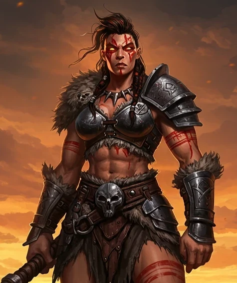

Endurance
Gain an additional Hit Point slot at character creation.

Guardian Giant Ridgeborne Level 7
Surgeon, ...
Gain an additional Hit Point slot at character creation.
Treat any weapon, ability, spell, or other feature that has a Melee range as though it has a Very Close range instead.
You have advantage on rolls to traverse dangerous cliffs and ledges, navigate harsh environments, and use your survival knowledge.
Spend 3 Hope to clear 2 Armor Slots
Once per long rest, you can become Unstoppable. You gain an Unstoppable Die. At level 1, your Unstoppable Die is a d4. Place it on your character sheet in the space provided, starting with the 1 value facing up. After you make a damage roll that deals 1 or more Hit Points to a target, increase the Unstoppable Die value by one. When the die’s value would exceed its maximum value or when the scene ends, remove the die and drop out of Unstoppable. At level 5, your Unstoppable Die increases to a d6. While Unstoppable, you gain the following benefits:
Tip: If your Unstoppable Die is a d4 and the 4 is currently facing up, you remove the die the next time you would increase it. However, if your Unstoppable Die has increased to a d6 and the 4 is currently facing up, you’ll turn it to 5 the next time you would increase it. In this case, you’ll remove the die after you would need to increase it higher than 6.
Mark a Stress to magically transform into a creature of your tier or lower from the Beastform list. You can drop out of this form at any time. While transformed, you can't use weapons or cast spells from domain cards, but you can still use other features or abilities you have access to. Spells you cast before you transform stay active and last for their normal duration, and you can talk and communicate as normal. Additionally, you gain the Beastform's features, add their Evasion bonus to your Evasion, and use the trait specified in their statistics for your attack. While you're in a Beastform, your armor becomes part of your body and you mark Armor Slots as usual; when you drop out of a Beastform, those marked Armor Slots remain marked. If you mark your last Hit Point, you automatically drop out of this form.
You can perform harmless, subtle effects that involve nature—such as causing a flower to rapidly grow, summoning a slight gust of wind, or starting a campfire— at will.
Gain a permanent +1 bonus to your damage thresholds.
When you take physical damage, you can mark an additional Armor Slot to reduce the severity.
Gain a permanent +2 bonus to your damage thresholds.
When an ally within Very Close range takes damage, you can mark an Armor Slot to reduce the severity by one threshold.
Gain a permanent +3 bonus to your damage thresholds.
When an ally within Close range has 2 or fewer Hit Points and would take damage, you can mark a Stress to sprint to their side and take the damage instead.
Mark a Stress to Channel one of the following elements until you take Severe damage or until your next rest:
Once per rest while Channeling, you can assume an aura matching your element. The aura affects targets within Close range until your Channeling ends.
You further embody your element. While Channeling, you gain the following benefit:
When an ally within Very Close range would take damage, you can mark a Stress to stand in the way and make yourself the target of the attack instead. When you take damage from this attack, you can mark any number of Armor Slots.
When you make a successful attack against a target within Very Close range, you can spend a Hope to use the attack against all other targets within Very Close range. All additional adversaries you succeed against with this ability take half damage.
Emanation - Very Close
When you choose not to equip armor, you have a base Armor Score of 3 + your Strength and use the following as your base damage thresholds:
Gain a bonus to your Severe threshold equal to your Proficiency.
When you mark 1 or more Hit Points from an attack, clear a Stress.
When 4 or more of the domain cards in your loadout are from the Valor domain, gain the following benefits:
You use the full force of your body in a fight. On a successful attack using a weapon with a Melee range, gain a bonus to your damage roll equal to your Strength.
Describe how you taunt a target within Close range, then make a Presence Roll against them. On a success, the target must mark a Stress, and the next time the GM spotlights them, they must target you with an attack, which they make with disadvantage.
When you choose this card, permanently gain two of the following benefits:
Then place this card in your vault permanently.
Handfuls 3 · Bags 7
Strength · Melee · 4d4+2 phy
Protective. Add the item's Tier to Armor Score
Strength · Melee · 4d10+4 phy
Powerful. On a successful attack, roll an additional damage die and discard the lowest result.
Strength · Very Close · 4d8+4 phy
Scary. On a successful attack, the target must mark a Stress.
Strength · Melee · 4d10+7 phy
Protective. Add the item's Tier to Armor Score
Thresholds 9/20 · Armor Score 4
Shifting. When you are targeted for an attack, you can mark an Armor Slot to give the attack roll against you disadvantage.
This item represents enough rations to feed a character for a few days. So long as a character has this item on them when they travel, they do not suffer from the effects of hunger or thirst. If a character does not have this item on their person during a long rest taken as part of a travel narrative, they may not take the clear stress downtime action. Generally speaking, a character does not need to carry multiple uses of this item. Each item represents multiple servings of foodstuff. After a long rest, however, a GM may spend a Fear in order to force a character to make an Instinct Roll with a difficulty based on the terrain. On a failure, the character runs out of rations and must consume this item.
Soul coins are about 5 inches across and about an inch thick, minted from infernal iron. Each coin weighs one third of a pound, and is inscribed with Infernal writing and a spell that magically binds a single soul to the coin. Because each soul coin has a unique soul trapped within it, each has a story. A creature might have been imprisoned as a result of defaulting on a deal, while another might be the victim of a night hag's curse.
Carrying Soul Coins. To hold a soul coin is to feel the soul bound within it- overcome with rage or fraught with despair. A player character can carry a number of soul coins equal to or less than its highest trait without penalty. A character who carries more soul coins than this limit suffers disadvantage on its duality and reaction rolls.
Using a Soul Coin. A soul coin has 3 charges. A creature carrying the coin can use its action to expend 1 charge from a soul coin and use it to do one of the following:
An infernal war machine's furnace consumes a soul coin instantly, expending all the coin's remaining charges at once and destroying the coin in the process. The soul trapped in the coin becomes trapped in the furnace instead, powering the infernal war machine for a duration determined by how many charges the soul coin had when it was consumed: 1 charge, 24 hours; 2 charges, 48 hours; 3 charges, 72 hours. If it's still trapped in the furnace when this duration ends, the soul is destroyed. Not even divine intervention can restore a soul destroyed in this manner.
Regardless of its size, a furnace can hold any number of souls, their screams of anguish audible out to a Far range. Each new soul fed to the furnace adds more fuel to the vehicle, allowing it to run longer.
Freeing a Soul. Casting a spell that removes a curse on a soul coin frees the soul trapped within it, as does expending all of the coin's charges without draining its essence or using it as fuel. The coin itself rusts from within and is destroyed once the soul is released.
A freed soul travels to the realm of the god it served or the outer plane most closely tied to its alignment (DM's choice). The souls of lawful evil creatures released from soul coins typically emerge from the River Styx as lemure devils.
A soul can also be freed by destroying the coin that contains it. A soul coin has immunity to all damage except that which is dealt by a hellfire weapon (or an infernal war machine's furnace). Freeing a soul from a soul coin is considered a good act, even if the soul belongs to an evil creature.
Hellish Currency. Soul coins are a currency of the Nine Hell s and are highly valued by devils. The coins are used among the infernal hierarchy to barter for favors, bribe the unwilling, and reward the faithful for services rendered.
Soul coins are created by Mammon and his greater devils on Minauros, the third layer of the Nine Hells, in a vast chamber where the captured souls of evil mortals are bound into the coins. These coins are then distributed throughout the Nine Hells to be used for goods and services, infernal deals, dark bargains, and bribes.
Clear 1d4+1 Stress.
Clear 1d4 HP.
Clear 1d4 Stress.
After you drink this tea, you instantly kill your target when you critically succeed on an attack. If you don’t critically succeed on an attack before your next long rest, you die.
Mark a Stress and clear a HP.
Clear 1d4+1 HP.
You can apply this venom to a weapon that deals physical damage to add a d8 to your next damage roll with that weapon.
During downtime, you automatically clear a Stress.
You can attach this charm to a weapon with a Melee range. Three times per rest, you can activate the charm and attack a target within Close range.
If you have at least one Phoenix Feather on you when you fall unconscious, you gain a +1 bonus to the roll you make to determine whether you gain a scar.
Who from your community did you fail to protect, and why do you still think of them?
You’ve been tasked with protecting something important and delivering it somewhere dangerous. What is it, and where does it need to go?
You consider an aspect of yourself to be a weakness. What is it, and how has it affected you?
How did I save your life the first time we met?
What small gift did you give me that you notice I always carry with me?
What lie have you told me about yourself that I absolutely believe?
An unofficial fan site for a private Daggerheart campaign.